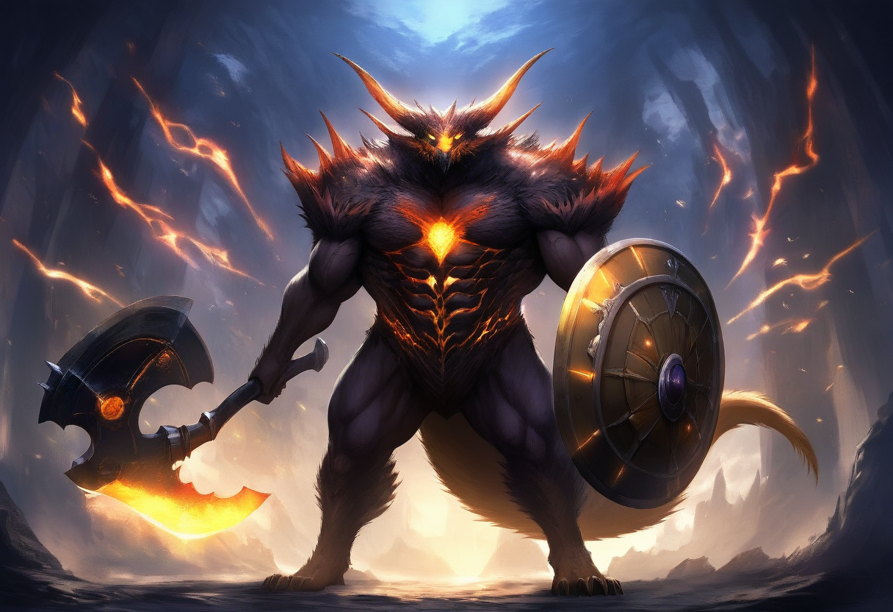

Sword Art Online — The Perfect Chaos
Aincrad · Andar 1
"O Começo da Jornada" — dia 10 depois do anúncio de Kayaba
Informações do Andar
- Recomendado Personagens iniciais
- Chefão Illfang the Kobold Lord
- Terreno Campos, floresta, lago, montanhas
- Clima Temperado
- Zonas seguras Cidade do Início, Tolbana
- Dificuldade ★★☆☆☆
Cristais de Teleporte
Só funcionam entre pontos já registrados — só as duas cidades do andar têm portão de teleporte.
- 1Cidade do Início — Praça do Portão
- 2Tolbana — Praça de Tolbana
Áreas e Dificuldade
| Região | Nível |
|---|---|
| Cidade do Início / Tolbana | Segura |
| Planície de Verrun | Fácil |
| Estepes de Kaldan | Médio |
| Floresta de Horunka | Médio |
| Lago Sylvaine | Difícil |
| Montanhas de Grauvenn | Muito difícil |
| Labirinto (raid) | Grupo grande |

MARCADORES NUMERADOS = LOCAIS PRINCIPAIS · ÍCONES = PONTOS DE ATIVIDADE (VER LEGENDA)
FICHA COMPLETA E RASTREIO POR JOGADOR → mapa interativo
Legenda
- NPC
- Monstro / caça
- Recurso / coleta
- Comerciante
- Segredo
- Puzzle
- Dungeon
- Chefe / miniboss
- Local numerado (marco)
Cidade do Início
- 1Praça do Portão
- 2Loja de Armas
- 3Forja do Ferreiro
- 4Ateliê do Costureiro
- 5Mercado Negro
- 6Centro de Treinamento
- 7Taverna
- 8Hospedaria
- 9Memorial dos Caídos
- 10Igreja
Tipos de Missão
- ⚔Eliminação
- ✦Coleta
- ➤Escolta
- ?Investigação
- ◈Diplomacia
- ◉Doma
- ▦Puzzle
- §Resolução
Cidade do Início — mapa detalhado
Anéis concêntricos: muralha externa → distrito comercial → Praça do Portão. Numeração corresponde à lista "Cidade do Início" ao lado.
Labirinto do Andar 1 — estrutura da dungeon
20 sub-níveis reais (ver mapas/andar_1.md); representados aqui em 5 trechos crescentes até a sala do chefe.
TRECHO 1–4
🚪
👹
💰
🛏
TRECHO 5–8
👹
👹
⚠
💰
TRECHO 9–12
💰
⚠
👹
👹
TRECHO 13–16
👹
🛏
⚠
👺
TRECHO 17–20
👺
👹
💰
🚪
FÁCILSALA DO CHEFE
🚪Entrada/Saída
👹 Patrulha Kobold
👺 Miniboss (Sentinel)
💰 Tesouro/recurso
⚠ Armadilha
🛏 Descanso seguro
Chefão do Andar 1

Illfang the Kobold Lord
Humanoide · 4 barras de HP (6–8 golpes cada)
Fase 1: machado + escudo, dano curto alcance. Fase 2 (1/3 HP): descarta escudo, usa nodachi com skills de katana. Convoca 3 Ruin Kobold Sentinel no início e +3 a cada barra perdida (até 12 no total).
Recompensas
- XP muito alto + Col alto pro grupo inteiro
- Equipamento de drop, raridade Raro+
- Last Attack Bonus: item "Cristal de Ascensão" — gatilho real do andar 2 (guardado pelo mestre)
Notas importantes
- Este é o mapa de referência rápida — pra rastrear exploração por personagem (fog of war individual), use o mapa interativo, que também tem as fichas completas de NPCs, bestiário, armas e mercado.
- Illfang não deve ser enfrentado por um grupo pequeno recém-formado — é conteúdo de raid organizado (ver cadeia de quests "Preparativos do Raid" em
cenas/quests_andar1.md). - O andar 2 não abre automaticamente com a morte do chefe — ver
docs/misterio_andar2.md(documento do mestre). - 60 quests completas, 33 criaturas no bestiário, 22 tipos de arma e as 16 profissões estão todas documentadas e ligadas ao mapa — este pôster mostra só os marcos principais.
Sword Art Online: The Perfect Chaos — Andar 1 — gerado a partir de scripts/web/dados_mapa.js